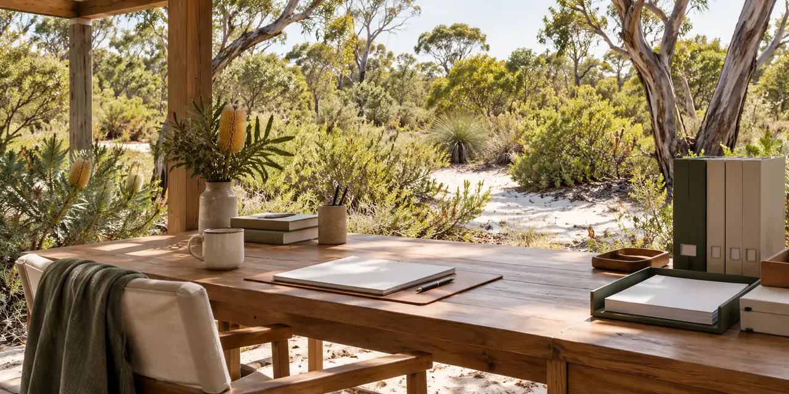

MINJERRIBAH · INDIGENOUS-LED · WORKING PLAN
Prepare private membership records and the registration member list.
The interactive workbench uses JavaScript. Download the complete plan, tasks CSV or document register.